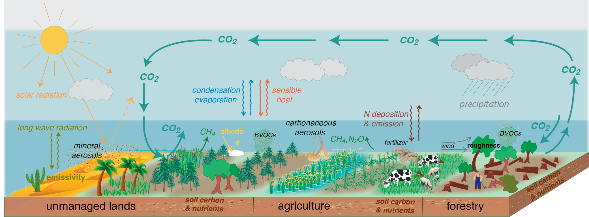

This is a topic I’ve covered a few times before, but frankly, I’ve chosen my words carefully to avoid appearing too judgmental. But the deeper I’ve gone into the interaction between the biosphere and the atmosphere, the less confidence I have that deforestation (cutting down trees) impacts the atmosphere in any meaningful way. As a result, I can no longer reconcile groupthink with scientific truth.
I’m at the point of calling it “bullshit”. But please don’t take this the wrong way. I am a fan of trees! They’re beautiful, forests are peaceful havens of nature, and I think they should be preserved if possible. However, I don’t think “climate change” is a valid scientific reason to protect them.
Here’s the IPCC modelers’ picture that illustrates the components they’re taking into account:

We’re back to von Neumann’s elephant!1 To be truly useful, models must simplify to the point of facile visualization. Consequently, the number of variables needs to be reduced to significant ones. Plus, models are not reality, no matter how many variables are included. If the most critical single component has a negligible impact, our efforts should be directed elsewhere.
To visualize effectively, where should we start? Let’s start with the familiar. Look out the window now, and consider a patch of green, any outdoor plant life. In daylight, that green patch is breathing carbon dioxide in from the atmosphere, while at night, it’s breathing carbon dioxide back out. At the time scale of climate, this is an extremely rapid process, one breath per day, and it’s a pattern that hasn’t changed in a very long time. The part of the planet in daylight absorbs carbon dioxide. While much of it is released at night, a fraction of the carbon is retained, and biochemical processes turn it into durable plant material. This process regulates Earth’s atmosphere.
We know from the primary data found in ice cores that, for millennia before 1750, Earth’s temperature and atmospheric composition have been virtually unchanged. From that fact alone, we must conclude that, in this time frame, the components in the model above were balanced. If they weren’t, the system would change until they were. You can visualize this as filling a cup with water from a faucet—the level rises until it reaches the edge and starts overflowing. At that point, the amount coming in matches the amount going out. Even though the water is still flowing, the water level remains constant. The same is true for carbon dioxide in the atmosphere, no matter how complex the model is.
Now let’s turn to human activity. Cutting down a tree, or even a forest, reduces the “lung capacity” of the planet just a little bit, such that each daily breath is a little shallower because of it. But that fact alone does not change the composition of the atmosphere. What matters most is what we choose to do next. Unless we actively prevent plant growth, nature will take over, and the green will return, regenerating the forest in comparatively short order2. Unless we chop, stack, dry, and burn the wood, the natural decomposition of wood is slow, comparable to the time trees take to grow3. Without subsequent human intervention, the effect of clearing foliage is negligible. The planet returns to its previous lung capacity without affecting the atmosphere’s composition. Even if the wood is burned, combustion is rarely complete. The remaining material (charcoal, but often called “biochar” as a climate-friendly product) is stable to further degradation (so durable that it can be found preserved in archaeological digs). And if deforested land is used for agriculture, as most of it is, then the net change is equivocal and may even be positive.4
Deforestation has been happening for thousands of years. Historically, trees have been cut down for timber, fuel, and agricultural expansion. One of the earliest examples of deforestation dates back to the Bronze Age in Europe, where primitive farmers cleared large areas of forests to make way for agriculture5. In ancient Greece and Rome, forests were cleared for timber and to create farmland6. In China, deforestation was practiced as early as 1100 BC. In the Americas, deforestation was less well documented but widespread before Europeans arrived. And, of course, American settlers cleared forests to create valuable farmland as the nation expanded westward.
We must conclude that, well before any tangible scientific evidence of global warming, deforestation had already been underway for thousands of years without effect on climate.7 Moreover, the cleared land was used almost exclusively for agriculture. Humans employed deforestation much the way they do today. But, despite this chronic environmental insult, the climates were stable, and humanity was sustainable.
The human population has expanded dramatically since then, but land use per capita has not kept pace for several reasons. First, we’re no longer maintaining draft animals that require feed. Second, agriculture, thanks to the “Green Revolution”, has increased the productivity of the land. Finally, we can better distribute nutrition from one part of the Earth to another without spoilage. Indeed, land use per capita worldwide has been cut in half just since 19618 and roughly tenfold since 1800.9
But what of all the brouhaha among the chattering class about how humans violate the natural order through deforestation? Surely they can’t all be equally deluded, right? It’s the madness of crowds: When everyone relies on a few experts, they sure can!
Here’s what IPCC brain trust says about the figure above, with its plethora of variables:
Changes in land conditions from human use or climate change in turn affect regional and global climate (high confidence). On the global scale, this is driven by changes in emissions or removals of CO2, CH4 and N2O by land (biogeochemical effects) and by changes in the surface albedo (very high confidence). Any local land changes that redistribute energy and water vapour between the land and the atmosphere influence regional climate (biophysical effects; high confidence). However, there is no confidence in whether such biophysical effects influence global climate.
So, the leading global effects are gas exchange changes (emissions and removals) and the jargon word albedo. The designated biophysical effects are localized, so they’re off the table insofar as global climate is concerned. From a visualization perspective, these computational geniuses tell us that forests are cooler and more humid than the parking lots immediately next to them. I don’t need a model to tell me that!
For the designated ‘biogeochemical’ effects, its gas exchange and “albedo”. To decode the jargon, albedo (from the Latin “whiteness”) is the fraction of solar radiation reflected from the surface. White is close to 100%, while black is close to 0%, so a snowpack that melts over an otherwise dark area will likely show the most significant albedo change. So, what do the models say? Here’s a summary:
Land use ERF [effective radiative forcing, a measure of the amount of the sun’s energy retained by the planet] is small and not significant at −0.09 (±0.13) W m−2. Forcing and adjustments are difficult to distinguish from zero, and it is unlikely that this forcing played a large role historically for global-mean impacts.10
Zero. Zero. Zero. Or, if you ignore statistics, then how humans use land lowers the energy retained, meaning that, if anything, we are cooling the planet. And these models consider that the cleared biomass is burned, and the forest is replaced by farmland!
Elsewhere you’ll see reports like this one from the UN Framework Committee on Climate Change:
The Intergovernmental Panel on Climate Change (IPCC) 6th assessment report finds that the “Agriculture, Forestry and Other Land Use (AFOLU)” sector on average, accounted for 13-21% of global total anthropogenic GHG emissions in the period 2010-2019. Estimated anthropogenic net CO2 emissions from AFOLU (based on bookkeeping models) result in a net source of +5.9±4.1 GtCO2eq/yr between 2010 and 2019 with an unclear trend. Land use change drivers net AFOLU CO2 emission fluxes, with deforestation being responsible for 45% of total AFOLU emissions. In addition to being a net carbon sink and source of GHG emissions, land plays an important role in climate through albedo effects, evapotranspiration, and aerosol loading through emissions of volatile organic compounds.
Most readers of this passage (particularly those seeking validation) will focus on the “net source” numbers and “45% of total” to attribute significance to the report, but the caveats are what’s important. Words like “estimated” and “bookkeeping” are red flags. The scientific models referred to in the first passage are top-down models of Earth based on first principles, while UNFCCC’s models are bottom-up models that attempt to balance Earth’s carbon budget on a massive spreadsheet. In other words, they add up everything we can count to derive a net emission (with a broad spread of values). It should be no surprise that the numbers don’t match.
Indeed, given the numbers cited, one can calculate the statistics: If the errors are a standard deviation and the shape of the underlying data is a normal distribution, then the probability that the actual value is zero, even when considering only the carbon we can count, is still 7.5%. This may seem unlikely, but it is comparable to the probability that Donald Trump would win the Presidency of the United States in 2016 and roughly equivalent to drawing a seven-card poker hand of two pair or better.
The bottom line: If you want to save or plant trees, be my guest. Gardening is a relaxing hobby. But please don’t consider that a rational response to climate anxiety. The simple model involving visualization (and even overparameterized land use models) tells us it’s neutral or possibly counterproductive behavior.
At the same time, the foundational science behind this outcome cannot be ignored. Biology is a lot faster than geology. At the time scale of climate, the exchange of carbon between the atmosphere and biosphere is virtually instantaneous, and neglected areas return to their natural state by absorbing carbon dioxide from the atmosphere, restoring the balance. We can and must control the biosphere if we can ever hope to maintain the atmosphere and, by extension, our climates.
Thank you for reading Healing the Earth with Technology. This post is public so feel free to share it.
Covered in an earlier installment, as reported by Freeman Dyson:
“There are two ways of doing calculations in theoretical physics”, [Fermi] said. “One way, and this is the way I prefer, is to have a clear physical picture of the process that you are calculating. The other way is to have a precise and self-consistent mathematical formalism. You have neither.”
…
In desperation, [Dyson] asked Fermi whether he was not impressed by the agreement between our calculated numbers and his measured numbers. He replied, “How many arbitrary parameters did you use for your calculations?” I thought for a moment about our cut-off procedures and said, “Four.” He said, “I remember my friend [computer pioneer] Johnny von Neumann used to say, with four parameters I can fit an elephant, and with five I can make him wiggle his trunk.”
Hiking in New England along the Appalachian Trail, you’ll often find stone walls running randomly through the forest. These are the remnants of farms abandoned more than a century ago. The forest has returned.
After all, trees in the forest die, too, and in decomposition, they release their carbon back into the environment.

Roberts, N., Fyfe, R.M., Woodbridge, J., et al. “Europe’s lost forests: a pollen-based synthesis for the last 11,000 years.” Sci Rep 8, 716 (2018). https://doi.org/10.1038/s41598-017-18646-7
Hughes, J.D. “Ancient Deforestation Revisited”. J Hist Biol 44, 43–57 (2011). https://doi.org/10.1007/s10739-010-9247-3
The population in 1800 is estimated to be around 1 billion people using about 1.4 billion hectares of arable land.
A comprehensive review of 17 models: Smith, C.J. et al., “Effective radiative forcing and adjustments in CMIP6 models”, Atmos. Chem. Phys., 20, 9591–9618, 2020, https://doi.org/10.5194/acp-20-9591-2020